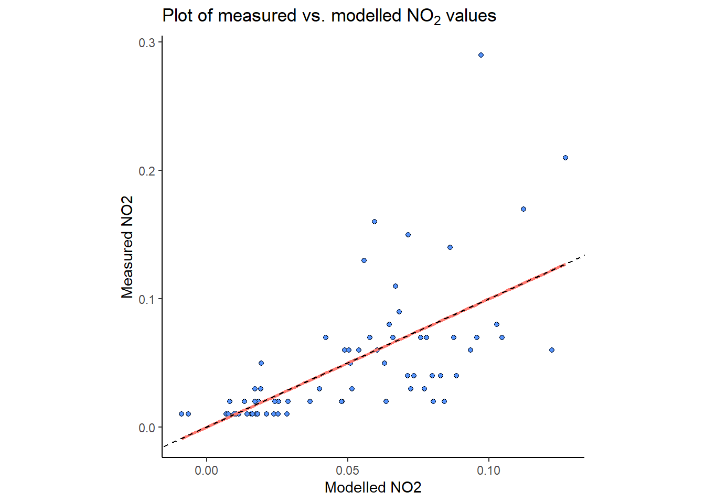

Chapter 11 Mersey V - Statistical analysis
In this final chapter, we will compare the information about catchment characteristics with the water quality data collected at each of the 70 monitoring stations. To begin, load the csv file created at the end of Task 6 (mersey_watersheds_ea.csv), saving to a new variable called watersheds_df:
# Reads completed file from csv
watersheds_df <- read.csv(here("output", "practical_2", "mersey_watersheds_ea.csv"))If you have any other variables in your R environment, these can be removed using rm().
11.1 Task 7: Model building
This data frame should contain the following 10 water quality indicators for each watershed:
- pH: acidity/alkalinity;
- SSC: suspended solids concentration;
- Ca: calcium;
- Mg: magnesium;
- NH4: ammonium;
- NO3: nitrate;
- NO2: nitrite;
- TON: total oxidised nitrogen;
- PO4: phosphate;
- Zn: zinc.
It should also contain the continuous derivatives (e.g. average elevation) and categorical derivatives (e.g. land cover percentage) for each watershed.
Note: some of your calculated percentages may not add up to 100%. In Task 4, we reclassified only the most important categorical variables. These are known to have the greatest impact of river hydrochemistry (e.g. urban areas, farmland). While other land cover categories are found within each watershed, these typically account for only a small percentage of the total area and have a limited effect on the river environment. These categories have been excluded to simplify the analysis.
11.1.1 An introduction to linear models in R
It is now time to examine the relationships between river water quality and catchment metrics. The key model outputs that are ultimately required for the assessment are:
Regression equations for each water quality variable (dependent variable; n = 10) and the key explanatory catchment characteristics (independent variables; n = 16).
Associated model values (R2, p value).
Remember, you don’t have to run every code block shown below, but you can do so if it would help your understanding.
The simplest way to run a linear regression in R is to use the lm() function, an example of which is shown below, storing the output in model (you can change this name to reflect the input variables):
# Fits a linear model
model <- lm(formula = NO2 ~ average_elevation, data = watersheds_df)We have defined the data frame being used (data = watersheds_df) and the input variables from that data frame. This is achieved by including their column names, shown here:
colnames(watersheds_df)## [1] "Seed_Point_ID" "FID" "EA_ID"
## [4] "Ph" "SSC" "Ca"
## [7] "Mg" "NH4" "NO3"
## [10] "NO2" "TON" "PO4"
## [13] "Zn" "area" "count"
## [16] "average_elevation" "average_rainfall" "average_slope"
## [19] "average_aspect" "Arable" "Heath"
## [22] "Grassland" "Urban" "Wetland"
## [25] "Permeable" "Impermeable" "Gleyed"
## [28] "Peats" "Sands_and_Muds" "Limestone"
## [31] "Coal" "Arable_percent" "Heath_percent"
## [34] "Grassland_percent" "Urban_percent" "Wetland_percent"
## [37] "Permeable_percent" "Impermeable_percent" "Gleyed_percent"
## [40] "Peats_percent" "Sands_and_Muds_percent" "Limestone_percent"
## [43] "Coal_percent"Input variables in the formula are separated by ~, where the variable to the left is the dependent variable (NO2) and the variable to the right is an independent variable (average_elevation). We can, however, include multiple independent variables to perform multiple linear regression. This is achieved as follows, where additional independent variables are separated by +:
# Fits a linear model
model <- lm(formula = NO2 ~ average_elevation + average_rainfall, data = watersheds_df)We can then assess the model output using the summary function:
summary(model)##
## Call:
## lm(formula = NO2 ~ average_elevation + average_rainfall, data = watersheds_df)
##
## Residuals:
## Min 1Q Median 3Q Max
## -0.059950 -0.015188 -0.010499 0.002269 0.226625
##
## Coefficients:
## Estimate Std. Error t value Pr(>|t|)
## (Intercept) 9.525e-02 3.198e-02 2.978 0.00403 **
## average_elevation -2.096e-04 8.951e-05 -2.341 0.02220 *
## average_rainfall -8.358e-06 5.450e-05 -0.153 0.87857
## ---
## Signif. codes: 0 '***' 0.001 '**' 0.01 '*' 0.05 '.' 0.1 ' ' 1
##
## Residual standard error: 0.04402 on 67 degrees of freedom
## Multiple R-squared: 0.3109, Adjusted R-squared: 0.2903
## F-statistic: 15.11 on 2 and 67 DF, p-value: 3.828e-06For this set of independent variables, we have an R2 of 0.32 (Multiple R-squared: 0.3109) and a model p value of < 0.01 (p-value: 3.828e-06).
The model coefficients for the independent variables are described above, where * denotes p values < 0.05 (95% probability) and ** denotes p values < 0.01 (99% probability). As the coefficients are very small, they are presented in scientific notation. These can be converted to numeric (non-scientific) format using the following code:
format(-2.096e-04, scientific = FALSE)## [1] "-0.0002096"We can supply multiple values to the format function by creating a vector:
format(c(-2.096e-04, -8.358e-06, ...) , scientific = FALSE)When you’re happy you understanding the formatting of the
lmfunction, move on to the next section.
11.1.2 Stepwise regression
However, one of the weaknesses of the above approach is that we have manually defined the independent variables of interest (average_elevation + average_rainfall). For exploratory analysis, however, we may not know which are the most important variables. Perhaps there is a combination of independent variables which produces a better model fit (e.g. R2 > 0.32)?
To test this, we’re going to include all the relevant independent variables in the analysis and then select those with the greatest explanatory power using Stepwise Regression (from the MASS package).
We don’t necessarily want to test all model variables, however. We would probably want to exclude the categorical counts (e.g. Arable, Heath, …) as these factors are already represented by the normalised variables (e.g. Arable_percent, Heath_percent, …), as well as any IDs or geometry variables (area). In general, we are only interested in testing the continuous derivatives (column names starting with average_) and the normalised categorical derivatives (column names ending in ’_percent’).
Rather than typing out the columns of interest manually, we are going to use the select function from the dplyr package to do so:
# Creates a vector of column names, including only those which contain "average" or "percent"
factors <- colnames(watersheds_df %>% dplyr::select(contains(c("average", "percent"))))
# Prints to console
factors## [1] "average_elevation" "average_rainfall" "average_slope"
## [4] "average_aspect" "Arable_percent" "Heath_percent"
## [7] "Grassland_percent" "Urban_percent" "Wetland_percent"
## [10] "Permeable_percent" "Impermeable_percent" "Gleyed_percent"
## [13] "Peats_percent" "Sands_and_Muds_percent" "Limestone_percent"
## [16] "Coal_percent"Run the above code. Note, the formatting of
dplyr::selectmay be slightly confusing but it is necessary because there is also aselectfunction in theMASSpackage. Here, we are telling R to useselectfromdplyr.
Using the vector of column names, we are going to create a new data frame (called variables) containing only the independent variables of interest:
variables <- watersheds_df[factors]Run the above code and use
head()to inspect the results.
Next, we are going to combine this data frame (cbind) with the dependent variable of interest (NO2). We’ll call this model_df as it contains all the variables (dependent + independent) required for multiple linear regression. Note: by default, cbind will (somewhat unhelpfully) rename input column names e.g. NO2 will become watersheds_df$NO2. The code below specifies the new column name as NO2 (NO2 =) for readability:
# Column bind the NO2 column from watersheds_df with the data frame containing all the independent variables
model_df <- cbind(NO2 = watersheds_df$NO2, variables)When complete, we can then run a new model, making sure to update the data frame used (data = model_df) and updating the formula to NO2 ~ .. This denotes that all other data frame columns will be included as independent variables (a useful time saver!):
# Fits a linear model
no2_model <- lm(formula = NO2 ~ ., data = model_df)When you’re happy you understand the
lmsyntax, combine the two dataframes, run the linear model and inspect the output usingsummary(). This should resemble the following:
##
## Call:
## lm(formula = NO2 ~ ., data = model_df)
##
## Residuals:
## Min 1Q Median 3Q Max
## -0.079376 -0.020381 0.000134 0.012654 0.174510
##
## Coefficients:
## Estimate Std. Error t value Pr(>|t|)
## (Intercept) -2.862e-01 1.780e+00 -0.161 0.8729
## average_elevation 2.658e-04 2.222e-04 1.196 0.2369
## average_rainfall -8.230e-06 7.071e-05 -0.116 0.9078
## average_slope -1.188e-02 8.469e-03 -1.403 0.1664
## average_aspect -5.281e-05 1.614e-04 -0.327 0.7448
## Arable_percent -9.127e-04 9.229e-04 -0.989 0.3272
## Heath_percent -1.526e-03 1.273e-03 -1.199 0.2358
## Grassland_percent -1.653e-03 9.247e-04 -1.787 0.0796 .
## Urban_percent -2.907e-04 9.812e-04 -0.296 0.7682
## Wetland_percent -1.362e-03 1.096e-03 -1.243 0.2194
## Permeable_percent 3.946e-03 1.734e-02 0.228 0.8209
## Impermeable_percent 2.880e-03 1.729e-02 0.167 0.8684
## Gleyed_percent 3.649e-03 1.734e-02 0.210 0.8341
## Peats_percent 3.289e-03 1.740e-02 0.189 0.8508
## Sands_and_Muds_percent 1.035e-03 3.016e-03 0.343 0.7329
## Limestone_percent 1.473e-03 3.528e-03 0.417 0.6780
## Coal_percent 1.008e-03 2.999e-03 0.336 0.7382
## ---
## Signif. codes: 0 '***' 0.001 '**' 0.01 '*' 0.05 '.' 0.1 ' ' 1
##
## Residual standard error: 0.04256 on 53 degrees of freedom
## Multiple R-squared: 0.4905, Adjusted R-squared: 0.3367
## F-statistic: 3.189 on 16 and 53 DF, p-value: 0.0007589Our overall model fit (R2) is 0.49 which indicates that the independent variables explain ~49% of variability in the dependent variable. However, the model contains many independent variables which are not statistically significant, here defined as having a p value > 0.05.
This number represents the probability that the result has occurred by chance. When values are very small (e.g. p < 0.0005), we would typically present these as a discrete value e.g. p < 0.05, < 0.01, < 0.001. Generally, we only use models in which we can be 95% confident or higher (i.e. significance level of 0.05 or less).
However, it is important to note that p values should be not be considered in isolation and need to be interpreted carefully. For statistical reviews of using and interpreting p values, see Goodman (2008) and Andrade (2019). For a broader overview, see the Nature commentary by Amrhein et al. (2019), as well as a summary article by Vox.
To filter our independent variables to include only the most important, we can use the step.AIC function from the MASS library as follows:
# Stepwise regression model
step.model <- stepAIC(no2_model, # Input linear model
direction = "both",
trace = FALSE, # Print out intermediate results?
k = 1) Helpfully, this takes the output of the lm model (no2_model) with no need for any additional data wrangling. The following are important parameters:
direction = "both":- Determines the method used, either forward or backward stepwise regression, or a mixture of both.
- “Forward” begins with a model with no variables and then starts adding the most significant variables, stopping when there are no more significant variables.
- “Backward” begins with a model with all variables and then starts removing the least significant variables, stopping when only significant variables are remaining.
- “Both” includes both of the above.
k = 1:- The number of degrees of freedom used for the penalty i.e. for determining whether variables are significant or not.
Run the above model (
direction = "both"andk = 1) and print the output usingsummary():
##
## Call:
## lm(formula = NO2 ~ average_elevation + average_slope + Arable_percent +
## Heath_percent + Grassland_percent + Wetland_percent + Permeable_percent +
## Gleyed_percent, data = model_df)
##
## Residuals:
## Min 1Q Median 3Q Max
## -0.073206 -0.024423 -0.001572 0.011732 0.173498
##
## Coefficients:
## Estimate Std. Error t value Pr(>|t|)
## (Intercept) 0.1022932 0.0318332 3.213 0.002097 **
## average_elevation 0.0002730 0.0001814 1.505 0.137485
## average_slope -0.0122713 0.0070213 -1.748 0.085546 .
## Arable_percent -0.0005464 0.0004921 -1.110 0.271209
## Heath_percent -0.0012936 0.0008355 -1.548 0.126706
## Grassland_percent -0.0014058 0.0004046 -3.474 0.000948 ***
## Wetland_percent -0.0010922 0.0006835 -1.598 0.115189
## Permeable_percent 0.0007075 0.0003031 2.334 0.022908 *
## Gleyed_percent 0.0003857 0.0002536 1.521 0.133507
## ---
## Signif. codes: 0 '***' 0.001 '**' 0.01 '*' 0.05 '.' 0.1 ' ' 1
##
## Residual standard error: 0.03989 on 61 degrees of freedom
## Multiple R-squared: 0.4847, Adjusted R-squared: 0.4171
## F-statistic: 7.173 on 8 and 61 DF, p-value: 1.19e-06As you can see above, using a low threshold for the degrees of freedom (k = 1) means we still have many “non-significant” variables remaining (p > 0.05)
Re-run the above model, but increasing the value of
kin intervals of 1 until all the independent variables are significant at p = 0.05 (denoted by*):
##
## Call:
## lm(formula = NO2 ~ average_slope + Urban_percent, data = model_df)
##
## Residuals:
## Min 1Q Median 3Q Max
## -0.064188 -0.020809 -0.004947 0.011032 0.192829
##
## Coefficients:
## Estimate Std. Error t value Pr(>|t|)
## (Intercept) 0.0491099 0.0144297 3.403 0.00113 **
## average_slope -0.0047714 0.0018903 -2.524 0.01397 *
## Urban_percent 0.0011327 0.0003502 3.234 0.00190 **
## ---
## Signif. codes: 0 '***' 0.001 '**' 0.01 '*' 0.05 '.' 0.1 ' ' 1
##
## Residual standard error: 0.04078 on 67 degrees of freedom
## Multiple R-squared: 0.4086, Adjusted R-squared: 0.391
## F-statistic: 23.15 on 2 and 67 DF, p-value: 2.274e-08In general, we prefer models with the minimum number of parameters (independent variables). They require fewer assumptions, less intensive data collection and can be applied more confidently to new data sets/locations. This approach is based upon Occam’s Razor: other things being equal, simpler explanations are generally better than more complex ones.
Our original model, based upon 16 independent variables had an R2 of 0.49. This new model, based upon just 2 independent variables (average_slope + Urban_percent) has an R2 of 0.41; a minor reduction in explanatory power given the removal of 14 (arguably unimportant) additional variables.
Our model coefficients are now as follows:
intercept= 0.0491099, p = 0.00113 (p < 0.01)average_slope= -0.0047714, p = 0.01397 (p < 0.05)Urban_percent= 0.0011327, p = 0.00190 (p < 0.01)
Coefficients are important because they are used in regression equations, which can then be used to predict values.
The general format for a regression equation is as follows:
\[
y = a + (b_1 \cdot x_1) + (b_2 \cdot x_2) + (b_n \cdot x_n)
\]
where a is the constant (intercept) value, and b is the coefficient of x.
For our NO2 model above, we can define our regression equation (presented using sensible data precision) as:
\[ NO_2 = 0.049 + (0.001 \cdot Urban \: percent) + (-0.005 \cdot Average \: slope) \] Well done! You have now calculated a regression which links the dependent variable (NO2) to a set of independent variables, in the case the average elevation of the watershed and the percentage urban land cover.
11.2 Task 8: Error analysis
Using this regression equation, we could predict NO2 values for the sampled watersheds to assess how well it reproduces the actual measured values. Comparison plots of measured vs. modelled (or predicted) values are just one way to assess model quality, alongside other metrics such as root-mean-square error (RMSE), normalised root-mean-square-error (nRMSE), Q-Q plots, or histograms of model residuals. You may want to explore some of these for the assessment.
To calculate modelled values, we can use the predict() function, taking the model variable (step.model) as the input, rather than re-creating the above equation manually in code:
# Predicts based on upon stepwise model, saving to watersheds dataframe
watersheds_df$predicted_no2 <- predict(step.model)As we haven’t specified any new_data (a predict parameter; see here), this uses the fitted values for prediction.
Run the above code block to predict the NO2 based on the regression equation.
These values could be used to calculate RMSE or other metrics (nRMSE) using your own code or additional packages (e.g. Metrics);
\[ RMSE = \sqrt{mean(measured\:values - modelled\:values)^2} \]
Plots of measured vs. modelled values (as well as Q-Q plots and histograms) can be created in ggplot2. Here is an example:
# ggplot of measured vs. modelled (predicted) NO2 values
no2_plot <- ggplot(data = watersheds_df, aes(x = predicted_no2, y = NO2)) +
# Adds the point data, modifying the shape, size, colour and fill
geom_point(shape = 21, colour = "black", fill = "#5695FF", size = 1.5) +
# Adding a linear regression ("lm"), removing standard error bars (se = FALSE)
geom_smooth(method = "lm", se = FALSE, colour = "#FF7A71") +
# Adding a 1:1 line for comparison
geom_abline(intercept = 0, slope = 1, lty = "dashed") +
# Setting the theme and aspect ratio
theme_classic() +
theme(aspect.ratio = 1) +
# Add axis labels and a title
labs(x = "Modelled NO2", y = "Measured NO2",
title = bquote('Plot of measured vs. modelled'~NO[2]~'values'))
no2_plot
To finish the practical and to prepare for the assessment:
Replicating the above approaches (Task 7), calculate regression equations based on stepwise linear regression for all 10 water quality indicators (NO2, pH, SSC, Ca, Mg, NH4, NO3, TON, PO4, Zn).
Use the same approach to create new data frames for each indicator, remembering to update the
kparameter in thestep.AICfunction (beginnin atk = 1) to determine the statistically significant variables.
Save the relevant model coefficients and the R2 and p values for each equation. These should be stored in a single table for the assessment.